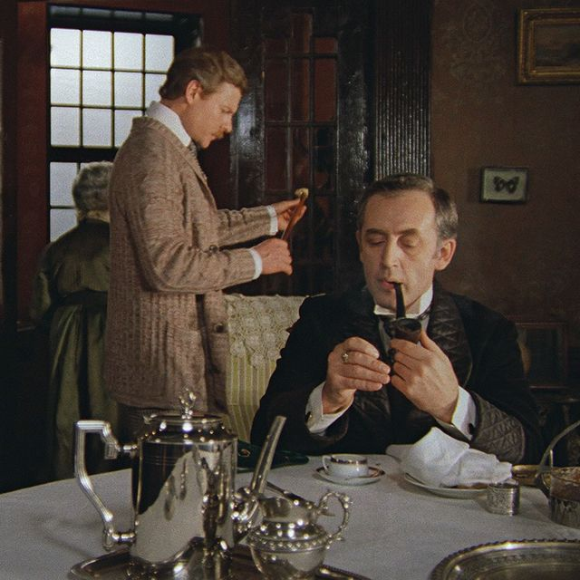
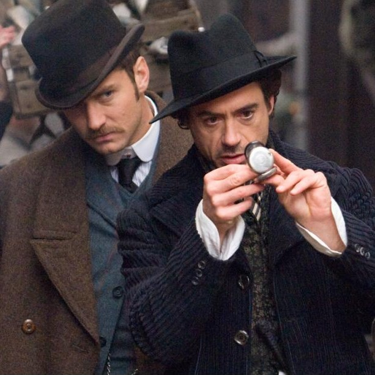
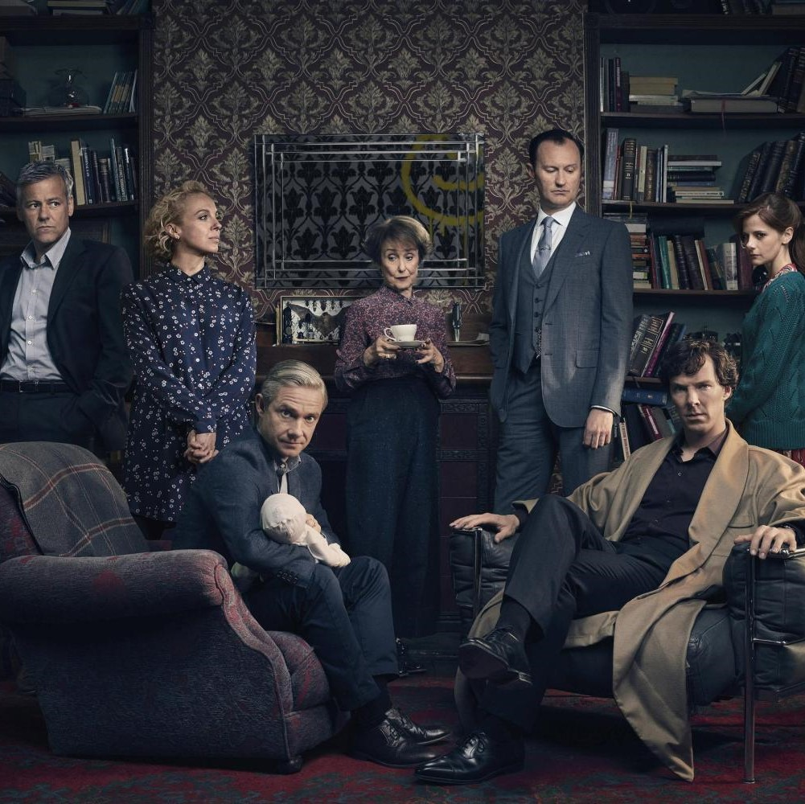

This is interesting, but let's talk about the Most Iconic Adaptations Of Sherlock Holmes!
- אלמנטרי (סדרת טלוויזיה)
- הרפתקאותיהם של שרלוק הולמס ודוקטור ווטסון (סדרת טלוויזיה)
- (שרלוק הולמס (סרט
- שרלוק (סדרת טלוויזיה)
אלמנטרי (2012-)
היא סדרת דרמה אמריקנית, של רשת הטלוויזיה CBS, שהיא גרסה מודרנית לעלילות שרלוק הולמס, הבלש הידוע מספריו של סר ארתור קונן דויל. ג'וני לי מילר מגלם את שרלוק, יועץ לשעבר בסקוטלנד יארד. שרלוק שב לניו יורק כדי לשהות במרכז גמילה מסמים ולאחר מכן נשאר בברוקלין, כשלצידו ד"ר ג'ואן ווטסון, אותה מגלמת לוסי לו, "מלוות הפיכחות" שלו. דמויות נוספות מעלילות שרלוק הולמס המקוריות ששולבו בסדרה הן מוריארטי, איירין אדלר וסבסטיאן מורן. ב-23 באוקטובר 2012 הזמינה CBS עונה שלמה של הסדרה וב-15 בנובמבר 2012 - שני פרקים נוספים לאותה עונה, כך שלבסוף הסתכמה העונה ב-24 פרקים. ב-27 במרץ 2013 הוזמנה עונה שנייה וב-26 בספטמבר 2013 החל שידורה. העונה השלישית התחילה ב-30 באוקטובר 2014. ב-5 בנובמבר החל שידורה של העונה הרביעית. ב-2 באוקטובר 2016 עלתה העונה החמישית. בתחילת מאי 2018 עלתה לשידור העונה השישית.

הרפתקאותיהם של שרלוק הולמס ודוקטור ווטסון (1979-1986)
הרפתקאותיהם של שרלוק הולמס ודוקטור ווטסון הוא שמה של סדרת סרטי טלוויזיה פופולרית בהפקת הטלוויזיה המרכזית של ברית המועצות ששודרה בשנים 1980–1986 ובוימו על ידי איגור מסלניקוב. הסרטים מהווים לעיבוד סיפורי שרלוק הולמס מאת ארתור קונאן דויל. בסדרה ככבו וסילי ליוואנוב כשרלוק ו-ויטאלי סולומין כד"ר ווטסון.הסדרה מורכבת מחמישה סרטים (11 פרקים באורך 766 דקות).
שרלוק הולמס (סרט, 2009)
שרלוק הולמס הוא שמו של סרט פעולה ומסתורין משנת 2009 המבוסס על דמותו של בלש ספרותי מאותו השם שנוצר על ידי סר ארתור קונן דויל. הסרט בבימויו של גאי ריצ'י והופק על ידי ג'ואל סילבר, ליונל ויגראם, סוזן דאוני ודן לין. התסריט נכתב על ידי מייקל רוברט ג'ונסון, אנתוני פקהאם וסיימון קינברג, ופותח מתוך סיפור מאת ליונל וויגרם ומייקל רוברט ג'ונסון. רוברט דאוני ג'וניור וג'וד לאו מגלמים את שרלוק הולמס וד"ר ג'ון ווטסון, בהתאמה. בסרט, הולמס ובן הלוויה שלו, ד"ר ווטסון, מתבקשים על ידי יריבתם לשעבר, איירין אדלר, לחקור סדרת רציחות הקשורות לטקסים נסתרים. מארק סטרונג מגלם את לורד בלקווד, שחזר איכשהו לאחר הוצאתו להורג עם מזימה להשתלט על העולם בעזרת תחמושת אפלה וטכנולוגיות חדשות.
שרלוק (2010-)
שרלוקהיא סדרת טלוויזיה דרמת פשע בריטית, המבוססת ומציגה פירוש עכשווי-מודרני לדמותו של שרלוק הולמס מסדרת הספרים הבלשית מאת ארתור קונאן דויל. את דמותו של שרלוק הולמס מגלם בנדיקט קמברבאץ', כשלצידו מרטין פרימן כדוקטור ווטסון. הסדרה חודשה על ידי רשת BBC לשתי עונות נוספות (רביעית וחמישית) כשצילומי העונה הרביעית החלו באפריל 2016. ב-1 בינואר 2017 שודר הפרק הראשון של העונה הרביעית של הסדרה. הוזמנו 2 עונות נוספות אך הפקתן טרם החלה ונדחית עקב לוח זמנים צפוף של השחקנים הראשיים בנדיקט קמברבאץ' ומרטין פרימן
